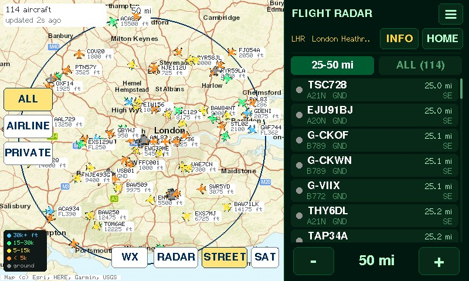
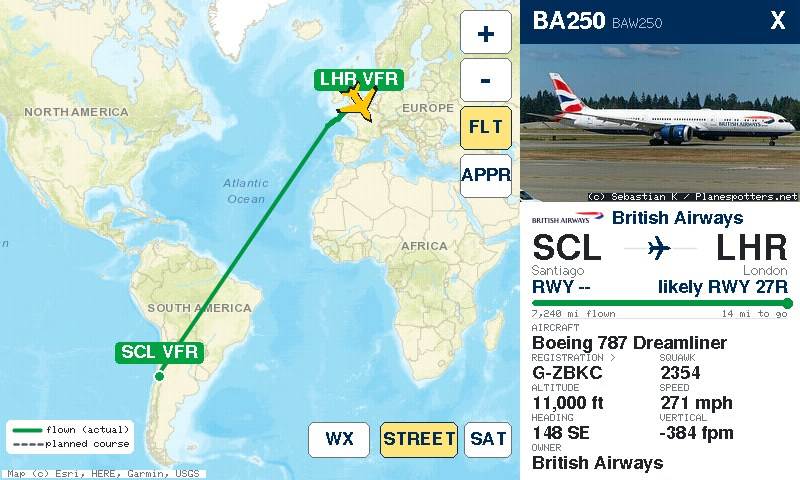
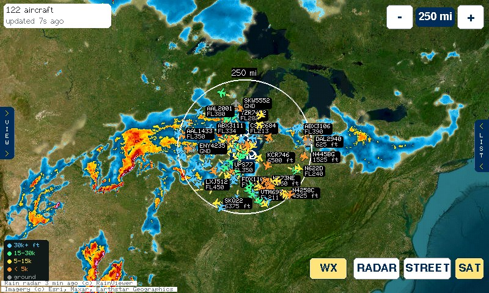
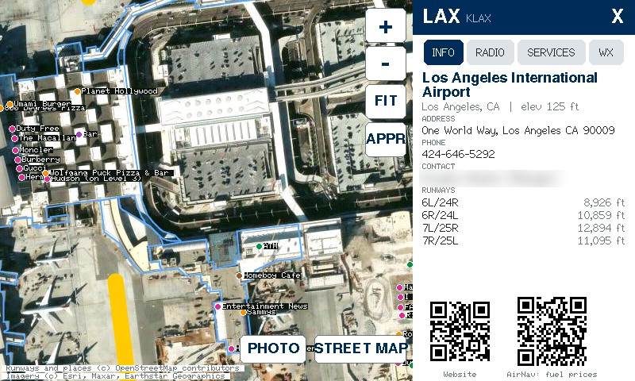
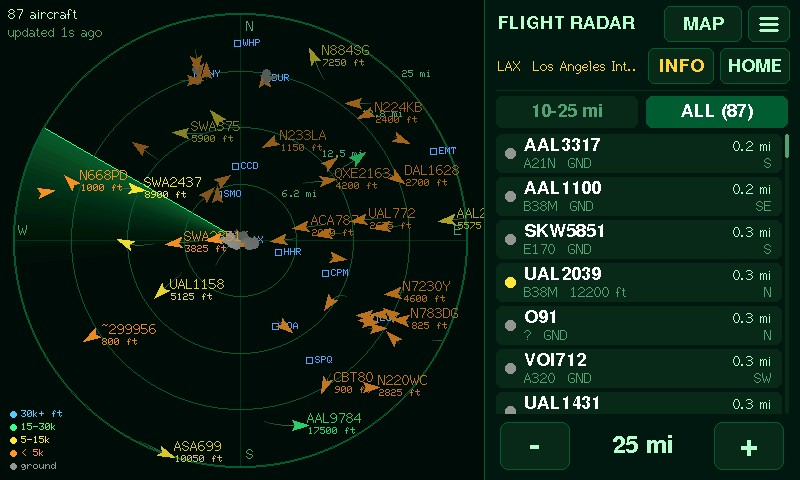
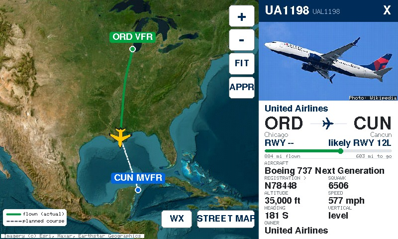
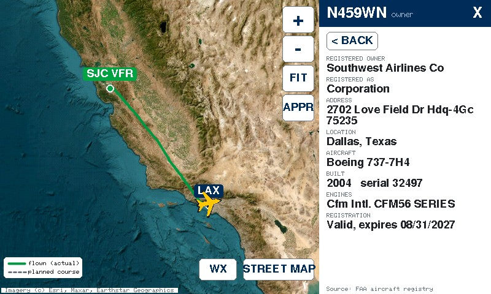
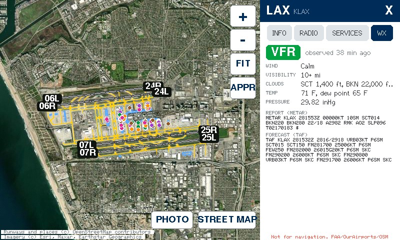
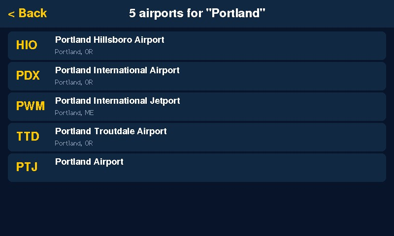
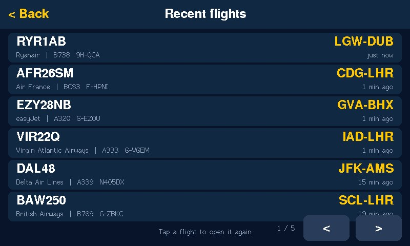

Free firmware · Version 4.0.3
Live air traffic on your desk.
Flight Radar turns the Waveshare ESP32-S3 7-inch touchscreen into a live flight tracker. Every plane around you, where it's going, the weather on the way and 9,000+ airports, all at a tap.
Need the display? Get the Waveshare 7-inch on Amazon

See it in action
Everything it does, in under two minutes
1:42 · 1080p · recorded on a real board · Download MP4
Features
A flight tracker, a pilot's reference and a conversation piece

Flight view
Tap a plane. Get the whole story.
Airline, route, aircraft type with a photo, altitude, speed and climb rate, updated every few seconds. The departure runway shows under the origin city, and the likely landing runway under the destination.
- The path it has flown and the course still to go
- Tap the tail number for the FAA registration
- APPR zooms in and follows it down to the runway

Live map and radar
From one mile to five hundred
Street map, satellite or a classic radar scope. Planes are coloured by altitude and labelled without clutter. Zoom right down to the gates or out to see thousands of flights across a whole region.
- Rain radar overlay with one tap
- Drag the map to explore anywhere
- Aircraft list by distance, or all at once

Airports
9,000+ airports in its memory
Runway diagrams, address and phone, radio frequencies, fuel and services, and the latest weather. The 64 busiest airports have full terminal maps built in, down to the coffee shops.
- METAR and TAF with flight category
- Fuel, repairs and services from FAA data
- A photo of each major airport






Step by step
Watch how to install it
Plugging in, installing from this page, and the first-time setup on the display, in under two minutes.
Install
Up and running in about five minutes
No software to install. Your browser writes the firmware straight to the board over USB.
You'll need
- A Waveshare ESP32-S3-Touch-LCD-7 (800×480). Not the 7B.
- A USB-C data cable
- Chrome or Edge on a Windows, Mac, Linux or ChromeOS computer
- A 2.4 GHz Wi-Fi network
Buying it through this link costs you nothing extra and helps keep Flight Radar free, with future updates and new projects.
- 1Plug the display into your computer using the port labelled USB.
- 2Click the button and choose the port (usually "USB JTAG/serial debug unit").
- 3Tick Erase device and click Install. It takes 2–3 minutes.
Port not showing, or the install stops partway? Hold BOOT, tap RESET, let go of BOOT and try again. Press RESET when it's done if the screen stays dark.
Prefer the command line? Download the package (firmware, installer and README) and flash it with esptool.
Then set it up on the touchscreen
Support the project
Flight Radar is free. Help keep it that way.
There are no ads, no subscriptions and no accounts. If you enjoy it, you can support future updates and new projects in either of these ways.
Buy the hardware through our link
Getting the Waveshare display through this Amazon link costs you nothing extra, and a small share of the sale supports development.
Get it on AmazonAs an Amazon Associate I earn from qualifying purchases.
Chip in a couple of bucks
Enjoying it? Any amount helps. Scan a code with your phone's camera, or tap the button if you're on your phone.


FAQ
Questions
Does it need an account or subscription?
No. It uses free public services for aircraft positions, routes, maps and weather, with no sign-up or API keys.
Where does the flight data come from?
Aircraft positions come from community ADS-B networks (adsb.lol, with adsb.fi as a backup), fed by volunteers' receivers. Routes come from adsb.im, flight history from the OpenSky Network, owners from the FAA registry, weather from aviationweather.gov and RainViewer, and airport data from OurAirports, the FAA and OpenStreetMap.
Why doesn't a flight show a route?
Private, training, cargo charter and military flights often have no published schedule. When the schedule doesn't match where the plane is actually heading, Flight Radar shows "Route not available" instead of guessing.
What about my Wi-Fi password and location?
They're stored only on the board. The display sends the approximate location of the area you're viewing (your postal code's centre, or the airport or map area you picked) to the data services so they can return nearby flights. It never sends your Wi-Fi details anywhere.
Will it work with 5 GHz Wi-Fi?
No. The ESP32-S3 supports 2.4 GHz networks only. Most home routers offer both.
Can I use it to fly?
No. Flight Radar is for fun and curiosity. Routes, runways, frequencies and weather come from public and community sources and may be wrong or out of date. Not for navigation.